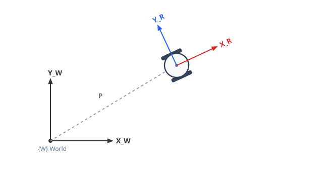
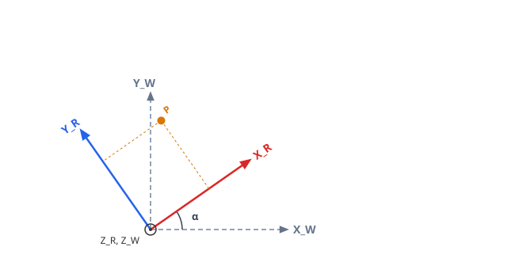
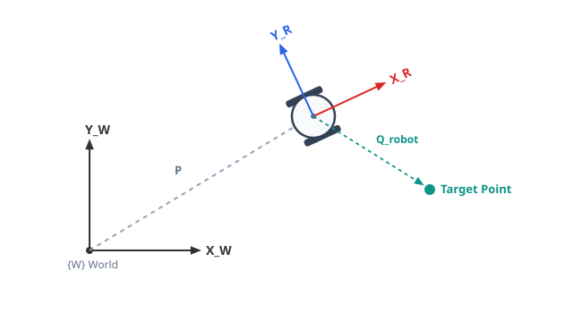
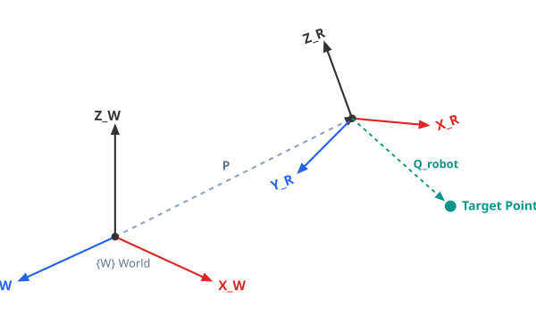
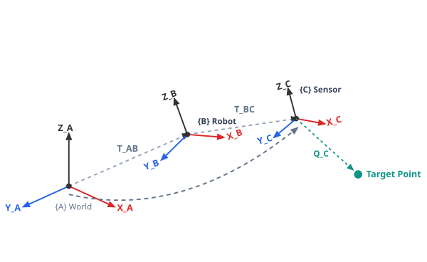
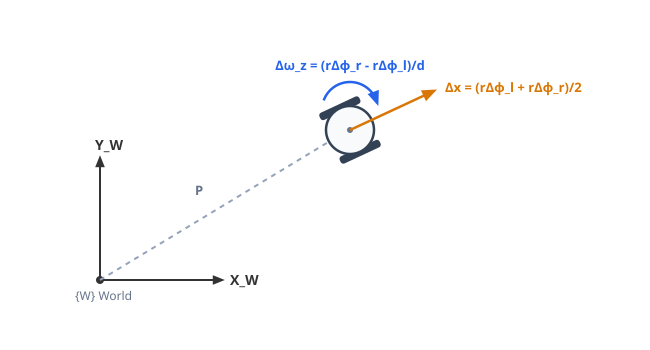
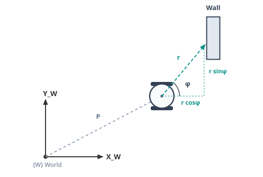

Part II: Spatial Representation
Cartesian Space
To describe a robot's position in space, we must account for both its position (translation) and its orientation (rotation). This position and rotation are always defined relative to a world coordinate frame. This representation is known as Cartesian space.

Describing Position and Rotation
A robot's location can be described with three values, one along each of the \(X\), \(Y\), and \(Z\) axes, measured relative to the world frame:
A robot also has an orientation — its roll, pitch, and yaw. We can expand the previous formula in the following manner:
Here, \(R\) represents the robot's rotation. When the robot's orientation matches the world's, \(R = I\) and \(\vec p = \vec c\).
\(R\) can also be built directly from the two frames' axes, without knowing the rotation angle beforehand. Each entry is the dot product between an axis of the robot frame and an axis of the world frame:

Each dot product is just the cosine of the angle between the two axes, scaled by their lengths ("Dot Product"):
Since each axis is a unit vector, its length is \(1\), so the dot product simplifies to just the cosine of the angle between them:
For a planar robot rotating only around \(Z\) (yaw, \(\alpha\)), most of these dot products reduce to \(0\) or \(1\), and the matrix collapses into the familiar 2D rotation matrix:
Combining Rotation and Translation
A point is often measured with respect to the robot's frame, but we need its position in the world frame instead.

\(R\) is the rotation matrix derived above, \(Q_{robot}\) is the target point's coordinates in the robot frame, and \(P\) is the translation between the two origins.
The Transformation Matrix
To combine rotation and translation into a single operation, we use a Homogeneous Transformation Matrix (\(T\)). On a flat plane, rotation only happens around one axis (yaw, \(\alpha\)):
A point measured in the robot frame (\(Q_{robot}\), e.g. the Target Point shown above) is converted to the world frame with:
Extending to 3D
Robots that also move or rotate vertically (drones, arms, legged robots) need a third axis, \(Z\). The same idea scales up to a \(4 \times 4\) matrix:

For a robot that only yaws (rotates around \(Z\)), those dot products fill in with the same \(\cos\alpha / \sin\alpha\) terms as the 2D case, leaving \(Z\) untouched:
Reversing a Transformation
Going the other way — from the world frame back into the robot frame — doesn't require recomputing anything. Since \(R\) is orthogonal, its inverse is just its transpose (\(R^{-1} = R^T\)), so:
Rotation is undone with \(R^T\), and the translation must first be rotated by \(R^T\) as well before being subtracted — since \(P\) was expressed in the world's orientation, not the robot's.
Chaining Transformations
Frames can be linked in a chain — a world frame, a robot base, and a sensor mounted on the robot, for example. To move a point through the whole chain, multiply the transformation matrices together:

Once combined, the result behaves exactly like any other transformation matrix — a point measured in frame \(\{C\}\) is converted all the way into frame \(\{A\}\) in one multiplication:
Examples in Practice
Odometry
Odometry is the process of estimating a robot's position from its own movement. Picture a differential-drive robot like the one below: it has two degrees of freedom in actuator space — it can move forward or backward by \(\Delta x\), and turn left or right by \(\Delta\omega_z\).

If we know the wheel radius \(r\) and how much each wheel turned this step, \(\Delta\phi_l\) and \(\Delta\phi_r\), we can compute how far the robot moved. Each wheel travels its own distance, \(r\Delta\phi_l\) and \(r\Delta\phi_r\), and the robot's center (midway between them) moves by their average:
The same goes for the rotation: if we also know how far apart the wheels are, \(d\), then:
(These equations only hold for a small \(\Delta\) — they're a linear approximation of the robot's motion over one short timestep.)
The step only happens along \(X_R\), so it's just the point \((\Delta x, 0)\) in the robot frame. Plugging it into the transformation matrix we already derived — using the robot's current position \((x_w, y_w)\) as the translation — directly gives its new position in the world frame:
Multiplying that out gives the update rule directly:
Code:
xw = xw + np.cos(alpha) * deltaX
yw = yw + np.sin(alpha) * deltaX
alpha = alpha + deltaOmegaZ
Laser Scanners
A laser scanner (LiDAR) doesn't report Cartesian coordinates — for each beam, it reports a distance \(r\) and an angle \(\phi\), measured relative to the robot's own \(X_R\) axis. Say one beam travels a distance \(r\) at angle \(\phi\) before hitting a wall:

\(r\) is the hypotenuse of a right triangle formed with the robot's own axes, so simple trigonometry gives the hit point's coordinates in the robot frame — exactly the two dashed projections shown above:
That point is still measured in the robot frame, so it goes through the same transformation as any other point to land in the world frame. A real scanner does this for hundreds of beams at once, so \(r\) and \(\phi\) become arrays, and the transformation runs on the whole array in a single matrix multiplication:
Here \(\circ\) is element-wise multiplication, \(\vec r \circ \cos\vec\phi\) just means "multiply every beam's range by the cosine of its own angle." This is exactly one matrix multiplication in code:
w_T_r = np.array([[np.cos(theta), -np.sin(theta), xw],
[np.sin(theta), np.cos(theta), yw],
[0, 0, 1]])
X_i = np.array([ranges*np.cos(angles), ranges*np.sin(angles), np.ones((360,))])
D = w_T_r @ X_i # 3x360